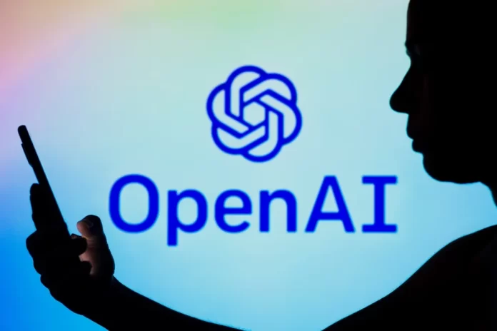
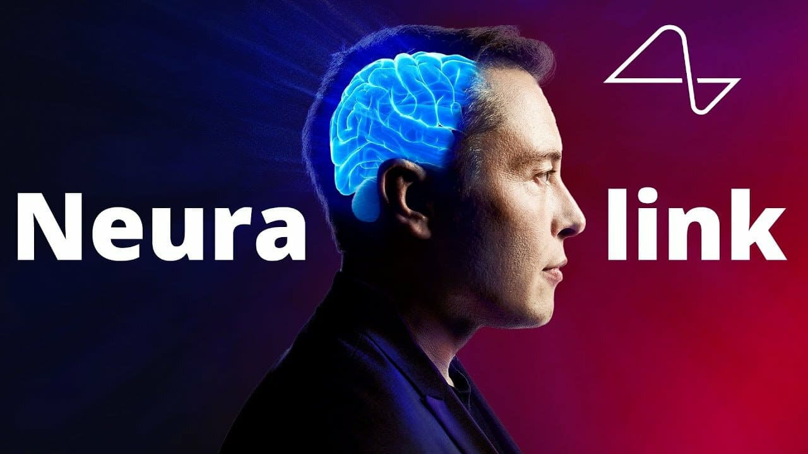
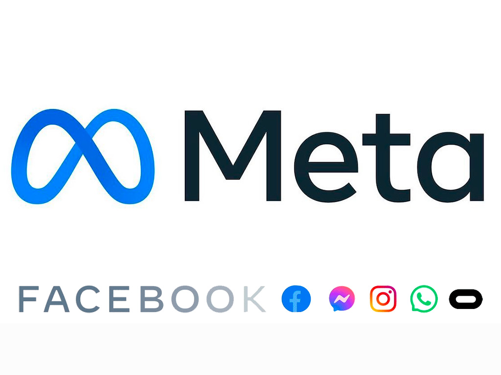
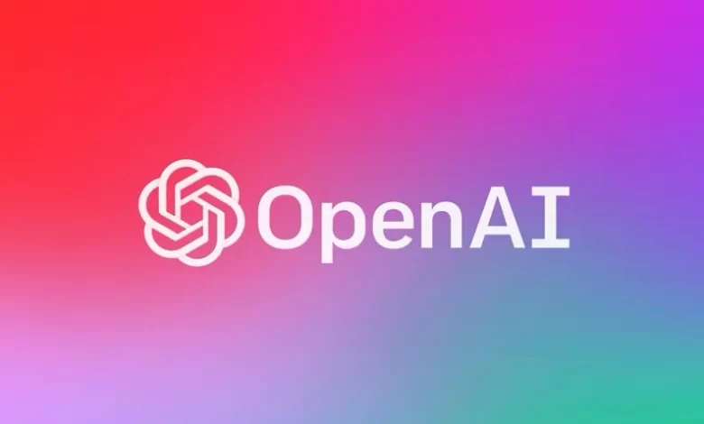
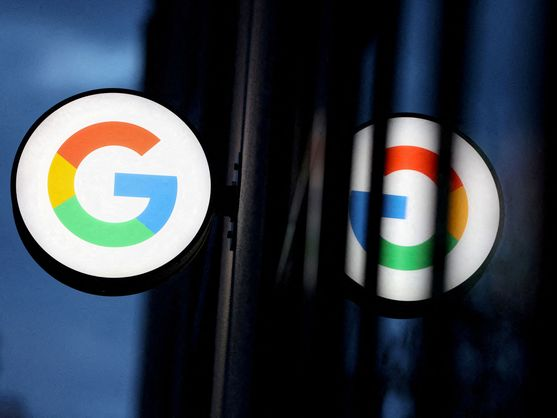

Así funciona ChatGTP, el chat de IA que facilita el trabajo a los programadores
Latest news
Áreas enfocadas a la tecnología, una prioridad en México

Neuralink: El "chip cerebral" de Elon Musk estará disponible para la población en general
Starlink, el internet de Elon Musk, llegó a Colombia, ¿cuánto cuesta comparado con México?

Así es como Meta intenta no quedarse afuera del auge de la inteligencia artificial generativa

El frenesí del ChatGPT se extiende por China, las empresas se apresuran a buscar opciones nacionales

Tecnología inalámbrica 5G transformará el transporte público en México

Olvídate de cómo usabas Google y Google Maps: así funcionarán a partir de ahora
OpenIA, la compañía de investigación de Inteligencia Artificial (IA) de Elon Musk, ha lanzado un nuevo elemento revolucionario; el ChatGTP. Se trata de una aplicación de la tecnología GPT-3.5 impulsada a principios de año y ahora aplicada al chat bot. Sin duda, un elemento innovador que hará más eficiente y sencilla la labor de los programadores.
Los desarrolladores de ChatGTP aseguran que es una versión más segura y mejorada con el aprendizaje reforzado mediante comentarios humanos, eliminando los datos dañinos y erróneos. Como lenguaje de IA mejora claramente a GPT-3.5 al contar con más de 175 millones de parámetros, lo que le permite desde la traducción simultánea hasta la creación de texto.
Quizás el elemento más atractivo sea su aplicación en la programación, ya que con ChatGTP es posible generar código informático de manera veloz.
Sin ir más lejos, hay usuarios que han demostrado a través de las redes sociales que con ChatGTP pueden crear el código de un juego en Python (lenguaje de alto nivel de programación empleado para crear APPs como Netflix, Spotify o Instagram) o idear una aplicación que crea resúmenes de ensayos aplicando GPT-3.5.
Gracias a ChatGTP los programadores informáticos podrán crear desde cero una landing page o generar una estrategia de email marketing, pues al contar con tantísimos parámetros solo habrá que hacerle unas indicaciones básicas para que comience a funcionar.
De hecho, ha sido tanta la demanda de ChatGTP entre los programadores, que la innovadora herramienta de OpenIA ha visto sus sistemas colapsados.
Es sorprendente, pero ChatGPT es capaz de ofrecerte respuestas similares a las que realizaría un ser humano, meditadas, sentimentales e incluso en otras lenguas o dialectos regionales.
El usuario que interacciona con este bot tiene la sensación de que habla con un humano, pues su precisión le lleva a emplear adjetivos de manera coherente y natural. Su versatilidad convierte a ChatGPT en un competidor férreo de Google.
Está preparada para comprender un contexto y tomar como base lo que se había hablado con anterioridad para emitir nuevas respuestas útiles debido a su sistema de memorización humana.
¿Puede la inteligencia artificial ayudar a conservar la biodiversidad?
El ser humano ha desencadenado en el planeta una dinámica que, de no detenerla a tiempo, puede tener consecuencias catastróficas. El cambio climático, las especies exóticas invasoras, la sobreexplotación de recursos, la destrucción de hábitats y la contaminación son fenómenos antropogénicos que actúan en sinergia, y causan graves pérdidas de especies y de ecosistemas. Y si se mantiene ese ritmo, el resultado puede ser un colapso de la biodiversidad, en lo que podría ser la sexta extinción masiva de la historia de la vida.
Dinosaurios que representan profesiones: conozca el poderoso mensaje detrás de la idea viralizada
La inteligencia artificial cada día brinda más oportunidades a personas y empresas del mundo, mediante redes sociales y aplicaciones para facilitar procesos.
Esta vez, mediante un atractivo dibujo se viralizaron dinosaurios que representan trabajadores de diversas profesiones con uniformes y herramientas, como maletas, corbatas, carnés y demás.
Ingesaurio, abogadosaurio, periodistasaurio, obrerosaurio y muchas más están viralizadas gracias a una página que crea el dinosaurio de su preferencia con accesorios extra mediante inteligencia artificial.
La inteligencia artificial amenaza el trabajo, también para modelos de Onlyfans
La inteligencia artificial está en primera plana y quizás continúe siendo así. La revolución tecnológica de estos años la tendrá como estrella. No escapa de las discusiones cómo será el futuro del trabajo. Los conductores podrían ser reemplazados por los vehículos autónomos, los abogados por sistemas como DoNoyPay, y ChatGPT amenaza a muchas otras profesiones. Lo que no podríamos imaginar es que las modelos también verían amenazados sus trabajos, y las creadoras de contenido en redes como Onlyfans deberán competir con la IA.